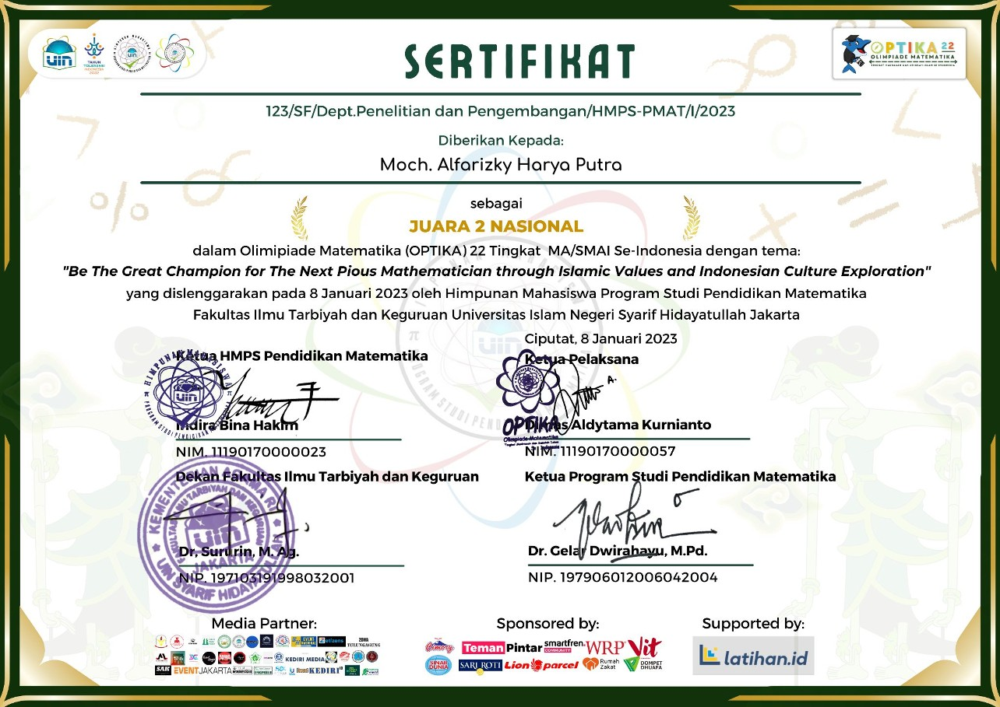

OPTIKA (Olimpiade Matematika Tingkat Madrasah dan Sekolah Islam) is a prestigious national mathematics competition organized by the Mathematics Education Student Association (HMPS Pendidikan Matematika) of UIN Syarif Hidayatullah Jakarta. The competition brings together students from Islamic schools and madrasahs across Indonesia to solve challenging olympiad-level mathematics problems. OPTIKA aims to foster analytical thinking, logical reasoning, and mathematical creativity while providing a platform for students to demonstrate their problem-solving abilities in a competitive academic environment. The competition is conducted through multiple stages, including regional qualifiers, national rounds, semifinals, and a grand final.